Give the Gift of Life Donate Blood Today!
Your blood donation can save lives and bring hope to those in need. Join us in making a difference today!
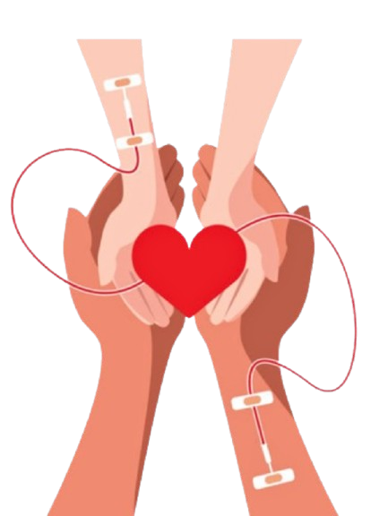
Your blood donation can save lives and bring hope to those in need. Join us in making a difference today!

Join our nationwide blood donation network. Your one contribution could be someone’s second chance at life.
Join us in spreading awareness about the importance of blood donation. Every drop counts!
Schedule your blood donation appointment easily. Help save lives with just a few clicks!
Track your donations and receive recognition for your contributions to saving lives.
BloodConnect Sri Lanka is a centralized platform designed to support and streamline blood donation efforts across the country. It helps donors register and find donation camps, connects hospitals with urgent blood needs, and raises awareness about the importance of saving lives through voluntary blood donation.
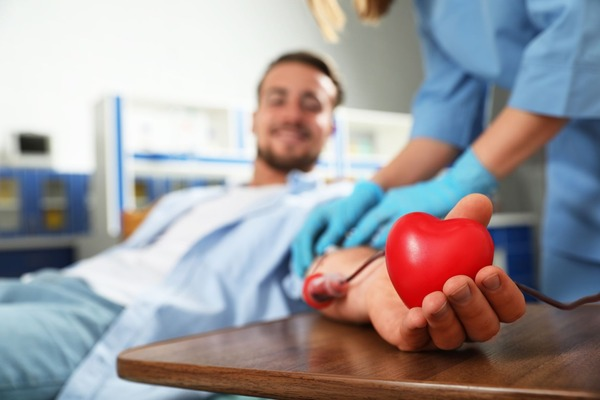
Our digital blood donation system helps donors and hospitals across Sri Lanka manage appointments, track blood requests, schedule donation drives, and stay informed — all through a secure, cloud-based portal.
Learn More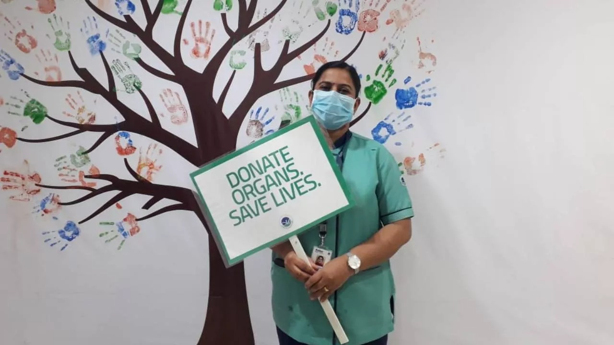
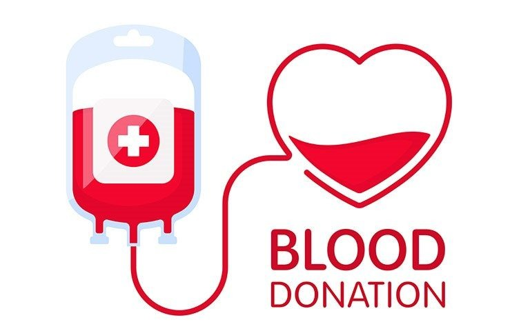
Find and book nearby blood donation events with real-time availability.
Track your donation history and receive reminders when you're eligible again.
Connect with hospitals and donation centers across Sri Lanka.
Understanding blood types is vital for saving lives. There are four main blood groups: A, B, AB, and O – each of which can be Rh-positive (+) or Rh-negative (−). Group O negative is the universal donor, while AB positive is the universal recipient. Learn your blood type and see how you can help patients across Sri Lanka by donating blood that matches their needs.
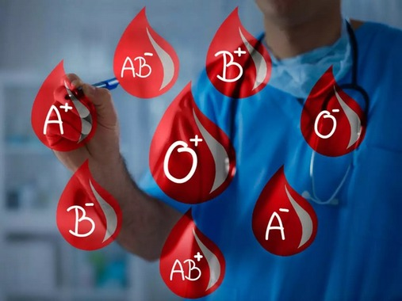
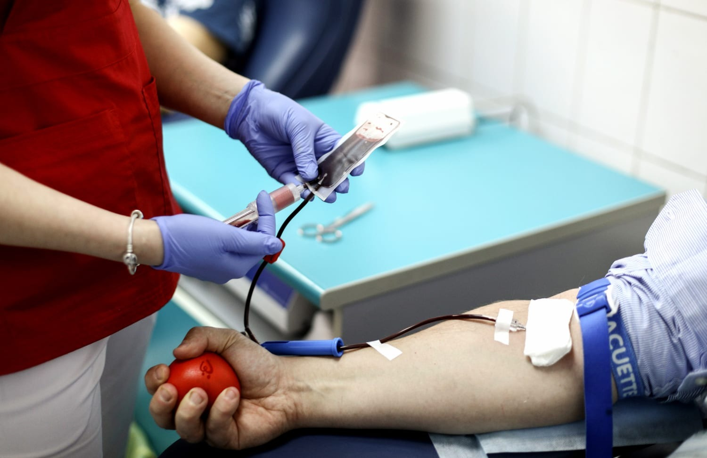
Ensure safe donations through quick health assessments and eligibility checks. Donors can complete screening questionnaires online, and results help streamline the donation process for both organizers and hospitals.
Our platform offers powerful tools to manage donation campaigns efficiently—track donor registrations, schedule appointments, monitor attendance, and maintain donation records. Organizers can also view real-time statistics to improve future events.
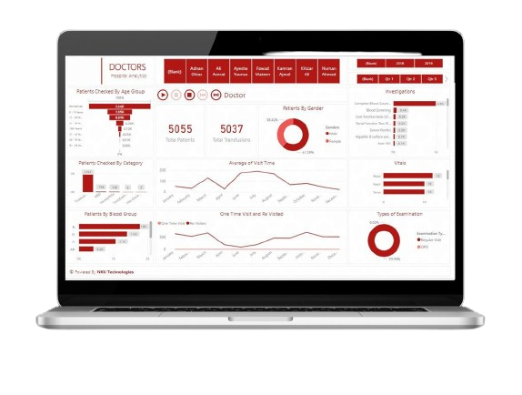
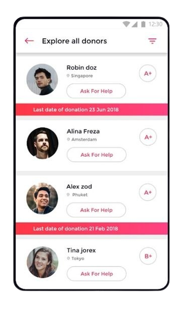
Organizers and medical staff can engage in private conversations with donors—answering questions, offering guidance, or confirming appointment details—ensuring a personal and secure experience.
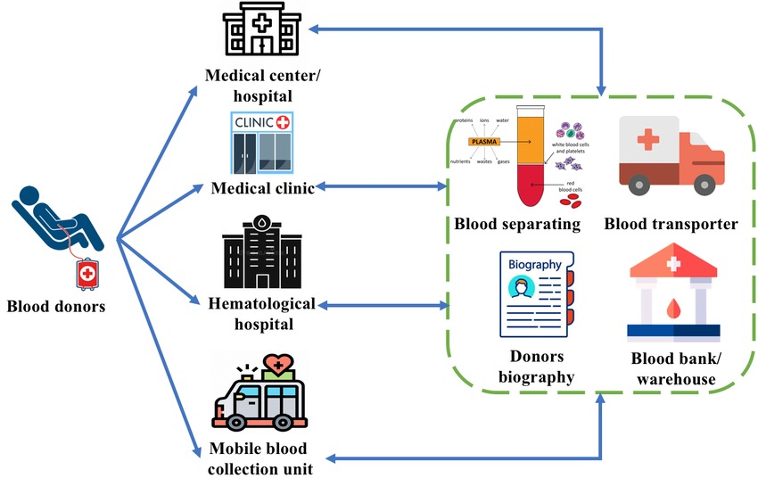
Our platform connects effortlessly with national hospital systems, mobile blood drives, donor databases, and SMS/email gateways to streamline operations across Sri Lanka.
We’ve received heartfelt thanks and positive feedback from donors and volunteers across Sri Lanka.
Many lives have been saved, and numerous volunteers have shared their rewarding experiences with us.
Have you donated or volunteered with us? Share your experience!
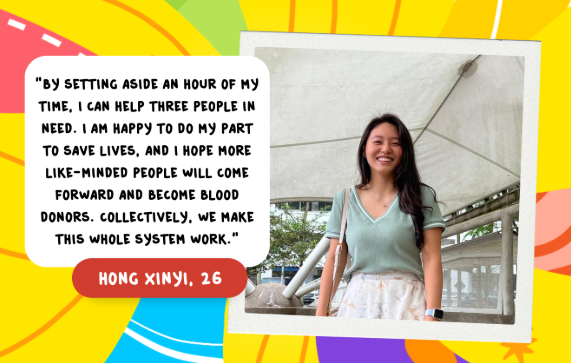
Stay updated with the latest blood donation campaigns, health resources, and community impact in Sri Lanka.
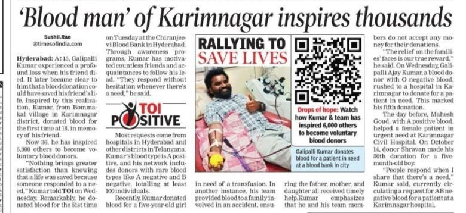
NEWSA major blood donation campaign is being conducted across Sri Lanka to help local hospitals tackle the current shortage...
Read moreA new facility in Colombo is making blood donation more accessible to the people, with extended hours for donors...
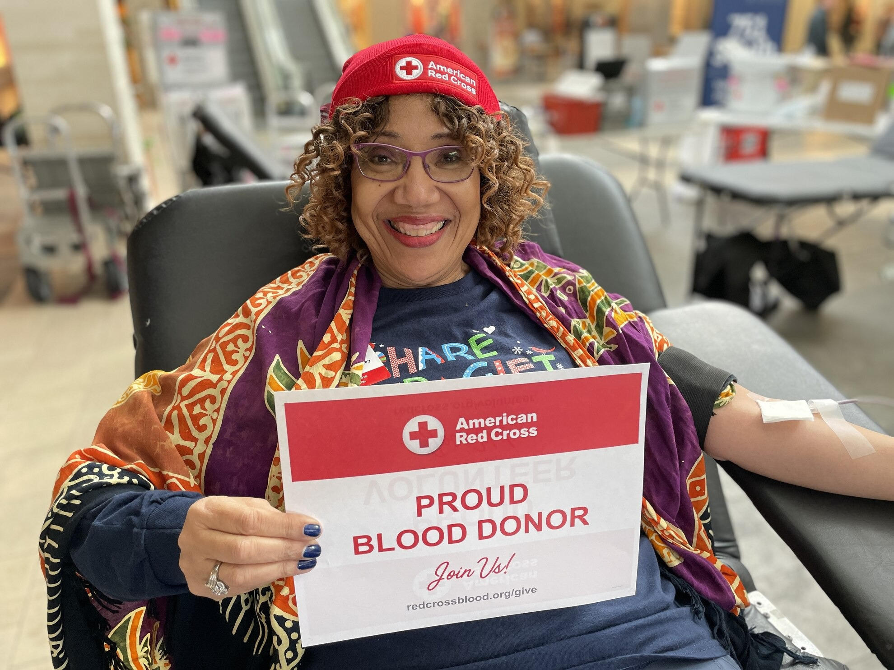
The country reaches a significant milestone in blood donations, ensuring hospitals are better equipped to handle emergencies...
The Sri Lankan government has launched a nationwide campaign to encourage more people to donate blood and save lives...